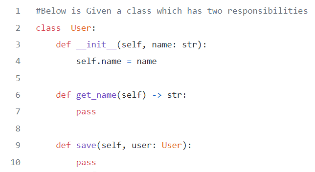
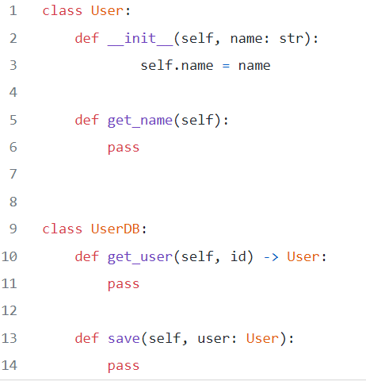
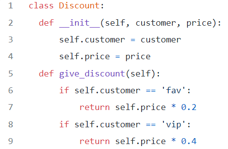
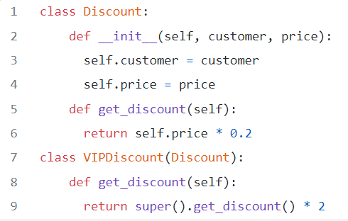
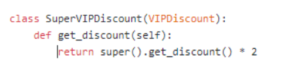
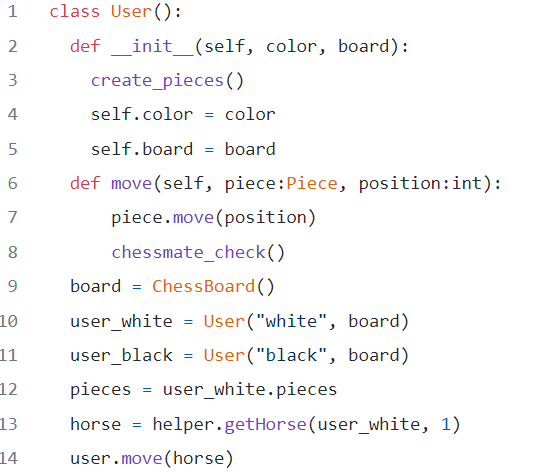
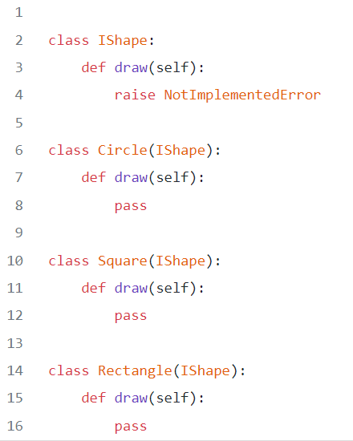
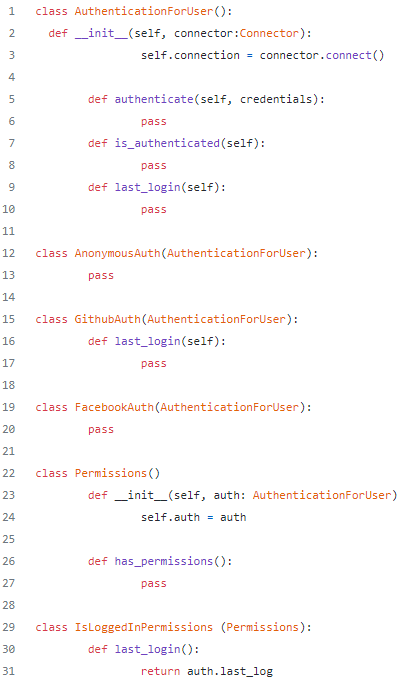

SOLID
S.O.L.I.D Principles explained in Python with examples.
SOLID is a mnemonic abbreviation for a set of design principles created for software development in object-oriented languages. The principles in SOLID are intended to foster simpler, more robust and updatable code from software developers. Each letter in SOLID corresponds to a principle for development:
When implemented properly it makes your code more extendable, logical and easier to read.
To understand SOLID principles, you have to know the use of the interface clearly.
I’m going to try to explain SOLID Principles in Python in simple way so that it’s easy for beginners to understand. It would be very easy to just take the examples provided and apply them to Python.
Let’s go through each principle one by one:
1. Single Responsibility Principle
The Single Responsibility Principle requires that a class should have only one job. So if a class has more than one responsibility, it becomes coupled. A change to one responsibility results to modification of the other responsibility.
We have a User class which is responsible for both the user properties and user database management. If the application changes in a way that it affect database management functions. The classes that make use of User properties will have to be touched and recompiled to compensate for the new changes. It’s like a domino effect, touch one card it affects all other cards in line.
So we simply split the class, we create another class that will handle the one responsibility of storing an user to a database:
A common solution to this dilemma is to apply the Façade pattern. User class will be the Facade for user database management and user properties management.
2.Open-Closed Principle
Software entities(Classes, modules, functions) should be open for extension, not modification.
Let’s imagine you have a store, and you give a discount of 20% to your favorite customers using this class: When you decide to offer double the 20% discount to VIP customers. You may modify the class like this:
No, this fails the OCP principle. OCP forbids it. If we want to give a new percent discount maybe, to a different type of customers, you will see that a new logic will be added. To make it follow the OCP principle, we will add a new class that will extend the Discount. In this new class, we would implement its new behavior:
If you decide 80% discount to super VIP customers, it should be like this:
Extension without modification.
3.Liskov Substitution Principle
The main idea behind Liskov Subtitution Principle is that, for any class, a client should be able to use any of its subtypes indistinguishably, without even noticing, and therefore without compromising the expected behavior at runtime. This means that clients are completely isolated and unaware of changes in the class hierarchy.
More formally: Let q(x) be a property provable about objects of x of type T. Then q(y) should be provable for objects y of type S where S is a subtype of T.
In simpler terms means that a subclass, child or specialization of an object or class must be suitable by its Parent or SuperClass.
Remarks on the LSP The LSP is fundamental to a good object-oriented software design because it emphasizes one of its core traits — polymorphism. It is about creating correct hierarchies so that classes derived from a base one are polymorphic along the parent one, with respect to the methods on their interface. It is also interesting to notice how this principle relates to the previous one — if we attempt to extend a class with a new one that is incompatible, it will fail, the contract with the client will be broken, and as a result such an extension will not be possible (or, to make it possible, we would have to break the other end of the principle and modify code in the client that should be closed for modification, which is completely undesirable and unacceptable).
Carefully thinking about new classes in the way that LSP suggests helps us to extend the hierarchy correctly. We could then say that LSP contributes to the OCP.
4.Interface Segregation Principle
Make fine grained interfaces that are client specific Clients should not be forced to depend upon interfaces that they do not use. This principle deals with the disadvantages of implementing big interfaces.
To illustrate this completely, we will go with a classic example because it is highly significant and easily understandable. The Classic Example
Another nice trick is that in our business logic, a single class can implement several interfaces if needed. So we can provide a single implementation for all the common methods between the interfaces. The segregated interfaces will also force us to think of our code more from the client’s point of view, which will in turn lead to loose coupling and easy testing. So, not only have we made our code better to our clients, we also made it easier for ourselves to understand, test and implement.
5.Dependecy Inversion Principle
Dependency should be on abstractions not concretions. High-level modules should not depend upon low-level modules. Both low and high level classes should depend on the same abstractions. Abstractions should not depend on details. Details should depend upon abstractions.
There comes a point in software development where our app will be largely composed of modules. When this happens, we have to clear things up by using dependency injection. High-level components depending on low-level components to function. To create specific behavior you can use techniques like inheritance or interfaces.
 {% endblock %}